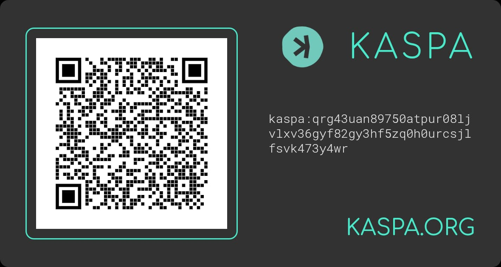

⚠️ THIS IS A PURELY SOLIDARITY-BASED PROJECT AND DOES NOT PROMISE ANY FINANCIAL RETURN. ⚠️
GOAL: Raise 100,000 KAS to fund the first home and workspace powered entirely by Kaspa NFTs — for someone who can no longer leave home due to health limitations.
Kaspa Bricks is more than just a personal story — it’s proof of what’s possible when a strong, real community comes together with real-world utility. This project aims to become the first home fully funded through NFTs on Kaspa’s PoW-secured network — a milestone not just for one person, but for the entire ecosystem.
The goal is simple: to help someone who can no longer work outside the home due to physical limitations build a small but stable life — a home and a workshop under one roof.
Each digital brick minted is a symbol of what we can build together: transparent, decentralized, and human.
On top of that, every brick NFT is uniquely numbered, making it collectible. Some bricks may hold special value due to their number or rarity, strengthening the emotional and community connection behind every contribution.
View Collection on KaspaI'm from Argentina. I first got into crypto back in 2011 when I discovered Bitcoin. I tried some mining, but at the time it didn’t seem worth it — and life was moving fast. I had to work full time, and after the Mt. Gox hack, I stepped away from it all.
For years I didn’t pay attention to crypto, until the COVID pandemic hit. Argentina had a really long and strict lockdown, and I had to close my small business for months. Around that time, my health — which had already been an issue — got worse.
Stuck at home, unsure of what to do, I started reading about Ethereum mining. I spent what I had saved to build a small GPU rig and relied on credit to get through the following months. It wasn’t ideal, but at the time, it felt like my only chance to survive financially. Later I managed to get a few more GPUs and kept mining until Ethereum switched to Proof of Stake.
That’s when I found Kaspa — around August 2022. I remember mining in SOLO and finding blocks that gave me 350 KAS. It felt exciting, like a second chance. I stuck with it. For the next couple of years, I mined Kaspa as much as I could. I sold small amounts to cover basic needs and kept some, believing in its future.
My health kept declining during that time. I wasn’t able to go back to my old job, and by 2024 I had to move farther from the city to find cheaper rent. I still did a few tech repair jobs when possible, but they became more and more rare. Between that and the end of GPU mining for Kaspa, things got a lot harder.
Now in 2025, I find myself without a steady income, unable to leave home, and with fewer ways to earn. I’m also trying to pay off the debts I accumulated over the past few years, but it’s been incredibly difficult — selling small amounts of the Kaspa I managed to save, month by month, just to get by. And that’s the part that hurts the most: I have no doubt in Kaspa’s long-term potential, and it frustrates me deeply to have to let go of what could one day represent a more stable future. Despite these hardships, I remain hopeful about Kaspa’s potential and the supportive community behind it.
That’s what led me to create this NFT collection. It’s a way to try something meaningful — not just ask for donations, but offer something to the community in return. The goal is to raise enough to eventually buy a small home with a storefront, so I can live and work from one place. Something sustainable, something honest.
I’ve made a commitment: I won’t touch the funds from this project unless Kaspa reaches $1. That’s my way of showing trust and long-term belief in the project and the people around it.
If I ever manage to make this dream real, Kaspa will be accepted as a form of payment at the shop, and there’ll be a plaque in the space, dedicated to every person who helped make it possible.
This project doesn’t use NFTs for speculation or hype — it uses them to engage the Kaspa community in something real, instead of simply asking for donations. Every NFT minted represents a piece of a shared goal.
Setting aside Kaspa’s undeniable technological strength, what truly inspired this project is the spirit of its community. This is about people helping people — and believing in what we can build together.
The funds from this project are not meant for quick use or short-term needs. They will remain untouched until Kaspa reaches $1 — reinforcing the long-term spirit behind this initiative.”
NFTs from this collection can also be freely traded or resold on secondary marketplaces that support KRC-721, continuing to promote Kaspa’s growing ecosystem.
Last month, some Bitcoin maximalists questioned the authenticity of Kaspa’s community on X (formerly Twitter), suggesting that our high activity might be driven by bots. While these claims arise from surprise at our engagement, the truth is simple:
Behind every Kaspa account is a real person — passionate, dedicated, and committed to building something meaningful together.
This project is a testament to that authenticity. Every NFT minted represents a brick laid by genuine people who believe in Kaspa’s vision and community.
Kaspa’s strength lies not only in its technology but in the vibrant and real community that supports it.
UPDATE -- Yesterday, August 6th, the community learned about a scam involving NFTs — a project that vanished with funds and deleted all social media channels. This unfortunate event reminds us how important transparency and trust are.
In light of this, I’ve been considering entrusting the NFT sale wallet to a respected community member, adding an extra layer of security and confidence.
As always, the funds raised will remain untouched until Kaspa reaches $1 — a commitment to long-term belief and responsibility toward the community.
UPDATE -- August 7th. After community feedback, I’ve decided to keep the NFT sale wallet under my name with full transparency, sharing all transactions publicly. Funds will stay locked until Kaspa reaches $1.
I’m watching Kaspa’s smart contract rollout for future options. If NFTs don’t sell well, I may open a Kas.coffee account to use donations to mint and giveaway NFTs to the community.
Thanks for the support — this project is truly community-driven.
THIS IS SUBJECT TO CHANGE; IF THE COMMUNITY DECIDES, WE CAN MOVE TO A 3RD PARTY OPTION.
...then this project becomes a reality. The funds will go toward purchasing a small home with a shop attached, where I can live and work in dignity. Kaspa will be accepted in the store, and there’ll be a wall with the wallets (or names) of every supporter.
Leftover KAS will be used for basic setup — furniture, tools, and anything needed to make the place functional. In the future, I’d love to help others in similar situations using this same model.
That’s okay too. Whatever is raised will be saved and held, untouched, until Kaspa reaches $1 — just as promised. Even if only a few NFTs are sold, it’s still support, and it still matters. I’ll do what I can with whatever we raise.
50 KAS feels like a fair and realistic amount — not too high, not too low. It's meant to be accessible to many, so that this can be a true community project. At current prices, it's affordable, and if Kaspa grows, so does the impact of your support.
50 KAS × 2000 NFTs = 100,000 KAS — just enough to make the project happen. Nothing more, nothing less.
Each NFT is a unique numbered digital brick — a symbol of your support and belief in what we’re building together. The NFTs are tradable, collectible, and forever tied to the story of this project and the power of community.
I’m exploring ways for NFT holders to participate in key project decisions. Nothing is set in stone yet, and I’d love to hear ideas from the community on how best to approach this.
If you have suggestions, feedback, or ideas to improve this initiative — I'm open to hearing them. This is a community-driven project at heart, and your input matters.
While the main way to support this project is by minting NFTs, some people have suggested setting up a donation option as well.
I'm not looking for donations in the traditional sense — but if you do choose to contribute directly, those funds may be used to mint NFTs and give them away to members of the Kaspa community, as a way to grow awareness and thank supporters.
The wallet address and QR code are just below.
I'm still exploring the best way to ensure full transparency. Initially, I considered asking a trusted third party to hold the funds, but based on community feedback, I’ve decided to keep the wallet under my name — while making all transactions visible and committing not to touch the funds until Kaspa reaches $1.
I’m also considering platforms like kasmixer or kas.coffee as possible ways to broaden support if needed — but for now, the core of the project remains the NFT collection.
For questions or support, reach out at: kaspabricks@gmail.com
Join the Kaspa Bricks Discord Server